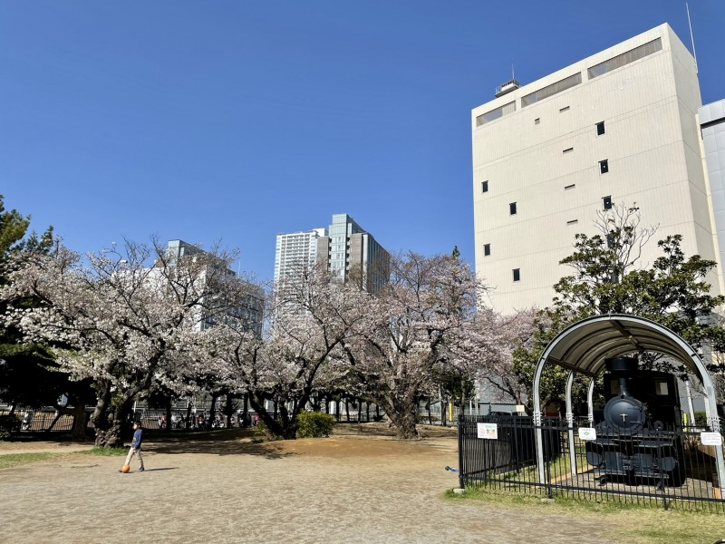

機関車を見つける散歩
津田沼一丁目公園には、機関車が展示されています。JR津田沼駅の北口側を散歩するときに、立ち寄ってみたい場所です。
機関車の形や車輪を眺めると、普段乗っている電車との違いを楽しめます。鉄道に興味がある人にも紹介したいスポットです。
散歩の楽しみ方
展示を見ながら、津田沼と鉄道のつながりを考えてみましょう。写真を撮るときは、周りの人の通行や公園の利用を妨げないようにしましょう。

津田沼一丁目公園には、機関車が展示されています。JR津田沼駅の北口側を散歩するときに、立ち寄ってみたい場所です。
機関車の形や車輪を眺めると、普段乗っている電車との違いを楽しめます。鉄道に興味がある人にも紹介したいスポットです。
展示を見ながら、津田沼と鉄道のつながりを考えてみましょう。写真を撮るときは、周りの人の通行や公園の利用を妨げないようにしましょう。